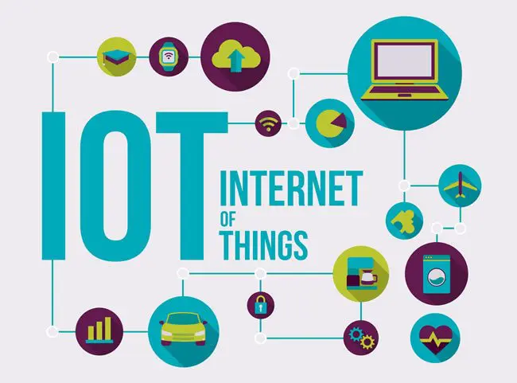

Introduction to Internet of Things
October 2, 2021 by Tajay Edwards

The Internet of things (IoT) is influencing our lifestyle, from smart cars that can self-park and provide the shortest route to your destination; to connected refrigerators that emails your local supermarket a list of food items you’re running out of, and sends you a notification on your mobile phone when your groceries are ready for pick up.
Projection for the future
In today’s world, all of our everyday devices are connected to the internet. These includes Desktops, Laptops, Tablets, Smart phones and smart watches. In the future almost all electronic devices and machines will have internet connectivity and will be represented digitally. This includes all our current home appliances, toys, vehicles and manufacturing machines etc.It is projected that by year 2025, roughly 80 billion devices will be connected to the internet world wide. This is largely due to the influx of devices that are gaining connectivity to the internet yearly, automating everyday life and giving us control of all our devices from anywhere in the world.
IoT Edge System and Data Analysis
October 3, 2021 by Tajay Edwards
Edge processing refers to the execution of aggregation, data manipulation, bandwidth reduction and other logic directly on an IoT sensor or device. The idea is to put basic computation as close as possible to the physical system, making the IoT device as “ smart “ as possible. – Andrew Thomas
Analysis, management, and storage of data
Once the data, previously digitized and aggregated in the first stage of the IoT Architecture, is received on the Server side, enhanced analytics and pre-processing takes place. The data first undergoes normalization and standard quality checks. Machine learning and neural networks can be utilized at this stage for in-depth analysis on the data to extract extra valuable information about the system. During the process powerful IT systems are used to manage, analyze, and securely store the information in a database, corporate data center or in the cloud. This stage is closely linked to the data acquisition stage in the architecture of an IoT system. Because of this, the edge IT systems are always located close to the actuators and sensors.
The data from multiple sensors collected from different locations and sites are combined in this stage and through processing and analytics provide deeper insight of the overall IoT system. Key trends and patterns about the environment and or processes the sensors are monitoring are identified at this stages, as well as anomalies, with the use of visualization technologies such as graphs and charts
In a corporate data center or in the cloud is where the main processes of this stage in the IoT ecosystem happen. This enables in-depth and advance processing of the data, and are carried out by both IT and OT (operational technology) professionals . In layman’s terms, this stage requires analytical skills of the highest rank, and incorporates data from other sources to ensure an in-depth analysis.